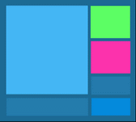

Bestimmung von Harmonien
Kapitel 4 | Farbgestaltung, von Vitaly Friedman

In Abhängigkeit von Zielen, die ein Designer durch die Farbkomposition erreichen will, entscheidet man sich in der Praxis für helle oder dunkle Kombinationen. Die jeweiligen Harmonien lassen sich in beiden Fällen auch bei genau festgelegter Tonalität nur durch gezieltes Experimentieren bestimmen. Der Auswahl einer Hauptfarbe folgt die Bestimmung von Nebenfarben. Monochromatische Farben können dabei unterstützend wirken und einen fließenden Übergang von einem Seitenelement zu einem anderen ermöglichen.
Um bei der Farbwahl möglichst konsequent vorzugehen, ist es üblich, einzelne Seitenblöcke mehrmals von oben nach unten abzutasten. Bei jedem Abklopfen ist zu prüfen, ob die Schnittstellen von Blöcken mit unterschiedlicher Farbe keine visuellen Nebeneffekte verursacht. Ist dies der Fall, so kann man dies durch Einsatz einer dezenten Übergangsfarbe – diese wird auf dem Farbenkreis »dazwischen« liegen – korrigieren. Allmählich kann man auf diese Weise jedem Seitenelement eine zu ihm passende Farbe geben.
Wie geht man nun aber konkret vor, um eine optimale Seitenwahrnehmung sicherzustellen? Im Weiteren betrachten wir die Auswahl von Farbpaletten für das Layout, das im vorigen Abschnitt entworfen wurde. Dabei wird die Aufgabe gestellt, die Startseite eines Web 2.0-Auftritts zu erstellen. Diese soll Seitenbesucher vor allem durch eine klare Darstellung, angenehme Farben und intuitives Design überzeugen.